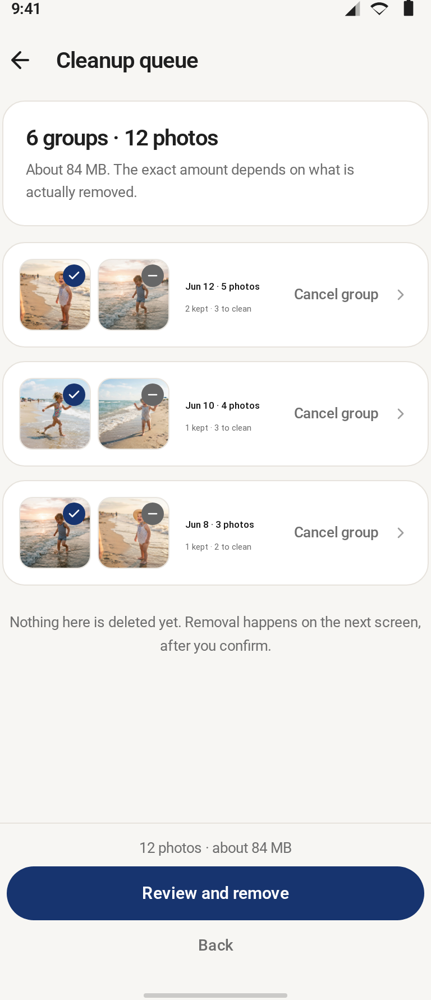
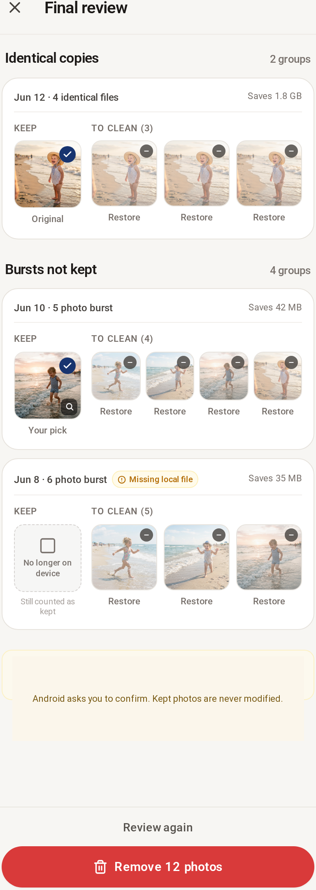

完全重複
以完整檔案的 SHA-256 比對，只有位元組完全相同才會成組，跨資料夾也能找到。
不做全能相簿，只把「刪掉哪張」這一件事做到你敢按下確認。
以完整檔案的 SHA-256 比對，只有位元組完全相同才會成組，跨資料夾也能找到。
依可信拍攝時間與視覺相似度分組，同一次拍攝的照片並排放，逐張標記精選或不選。
標記只是偏好，不會刪任何東西；只有你在最終確認裡逐張看過並同意，系統才會請求刪除。
只寫能兌現的四條；做不到的承諾不寫。
從分組、標記到最終確認，每一步都看得到會發生什麼。


香港易企鏈存科技有限公司為香港註冊的軟件公司，自行研發並營運流動應用程式。
研發面向一般消費者的 Android 工具類應用，聚焦相簿整理與本機資料處理。產品由本公司自行設計、開發與維護，不代理第三方產品。
BurstKeeper — Android 相簿整理應用，找出完全重複的檔案、把同一次拍攝的相似照片並排對比，由使用者逐張決定去留；分析在本機完成，照片不上傳。
以香港為註冊地，透過 Google Play 向海外使用者發佈應用。客戶服務與商務聯絡均以電郵及電話直接處理，不設中介。
BurstKeeper 由香港易企鏈存科技有限公司開發並營運。